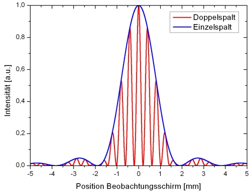
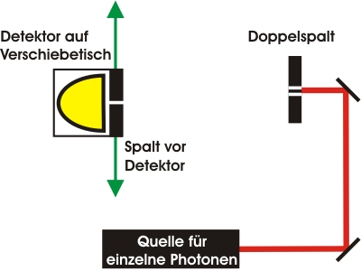
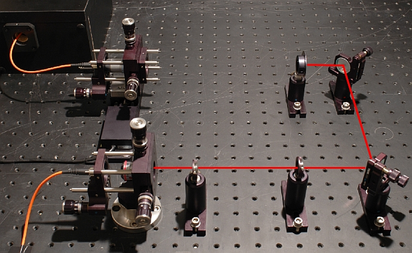
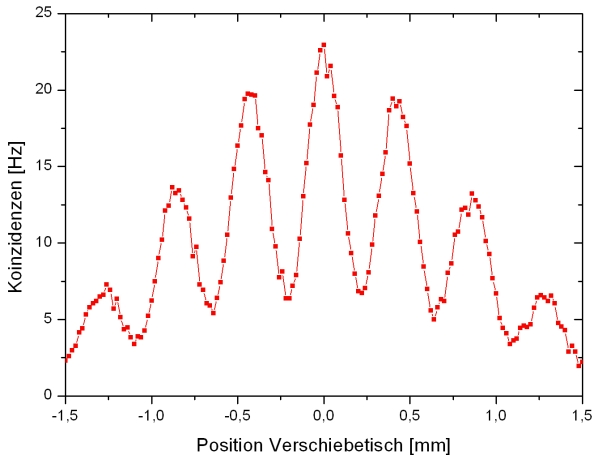
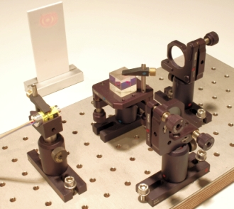
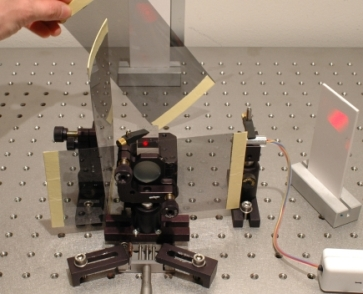

Interferenz Kapitel 6:
Interferenz und Beugung am Doppelspalt
Eines der populärsten Experimente zur Quantenphysik ist der Doppelspaltversuch. Young [You04] zeigte im Jahr 1802 mit dem Experiment die Welleneigenschaft von hellem Licht. 1961 wurde das Experiment durch Jönson [Joe61] mit einzelnen Elektronen durchgeführt. In den letzten Jahren erfolgten Doppelspaltexperimente mit einzelnen Neutronen [Zei88], einzelnen Atomen [Car91] und einzelnen Molekülen [Arn99]. Bis heute wird mit immer massiveren Molekülen die Grenze zwischen quantenmechanischer und klassischer Welt am Doppelspalt untersucht. Auf der folgenden Seite wird der Doppelspaltversuch zunächst mit hellem Licht und schließlich mit einzelnen Photonen durchgeführt. Am Ende der Seite wird erläutert, warum zum Einsatz in der Schulausbildung das Interferometer geeigneter als der Doppelspaltversuch ist.
Theoretische Beschreibung
Das Experiment zum Doppelspaltversuch besteht aus einer Lichtquelle, dem eigentlichen Doppelspalt und einem Beobachtungsschirm (Abb. 1 links). Beim Doppelspalt (Abb. 1 rechts) können entweder beide Spalte geöffnet sein oder ein einzelner Spalt abgedeckt werden.
Abb. 1: links: Aufbau des Doppelspaltexperimentes, rechts: Doppelspalt aus Metall
Zunächst wird ein Spalt des Doppelspaltes abgedeckt. Mit hellem Licht und dem Einzelspalt ist auf dem Beobachtungsschirm ein Intensitätsmuster aus weit auseinander liegenden hellen und dunklen Streifen beobachtbar. Physikalisch ist die Beobachtung über die Beugung von Licht erklärbar, was ein typisches Wellenphänomen ist. Nun werden beide Spalte geöffnet. Auf dem Beobachtungsschirm ist ebenfalls ein Intensitätsmuster aus eng aneinanderliegenden hellen und dunklen Streifen beobachtbar (Abb. 2 - rote Kurve). Physikalisch ist die Beobachtung über die Interferenz und die Beugung von Licht erklärbar.

Abb. 2: Berechnete Intensitätsverteilung auf dem Beobachtungsschirm
Experiment mit intensiven Licht
Für das Doppelspaltexperiment ist kein monochromatisches Licht (z. B. Laserlicht) notwendig, da nicht die zeitliche Kohärenz, sondern die räumliche Kohärenz des Lichts entscheidend ist. Die zeitliche Kohärenzlänge der Lichtquelle kann nahezu beliebig klein sein. Das Interferenzmuster kann mit einer normalen Kerze als Lichtquelle beobachtet werden. In Abbildung 3 links wurde das Experiment mit dem Licht einer Halogenlampe durchgeführt, wobei das Interferenzbild über eine Webcam mit einem grünen Bandpassfilter aufgenommen wurde. In Abbildung 3 rechts wurde das Interferenzbild mit intensiven Laserlicht der Wellenlänge 633nm ohne Bandpassfilter aufgenommen.
Abb. 3: Interferenzmuster eines Doppelspaltes mit hellem Licht
links: mit Halogenlampe und Filter, rechts: mit Laserpointer
Experiment mit einzelnen Photonen
Ein Interferenzmuster ist nur dann beobachtbar, wenn sich zwei Wellenzüge mit fester Phasenbeziehung überlagern. Im Folgenden soll das Verhalten eines einzelnen Photons am Doppelspalt beobachtet werden. In den Abschnitten zur Existenz des Photons und zum Quantenzufall wurde gezeigt, dass Photonen unteilbare Portionen sind. Wie verhalten sich einzelne Photonen am Doppelspalt?
Zur Aufnahme des Interferenzmusters muss der Beobachtungsschirm durch einen Detektor für einzelne Photonen ersetzt werden (Abb. 4). Der Detektor befindet sich dabei auf einem Verschiebetisch, mit dem der Beobachtungsbereich abgefahren wird. Damit eine Aussage über die Anzahl der Photonen an einem bestimmten Ort möglich ist, wird der Sichtbereich des Detektors durch einen 50µm breiten Spalt begrenzt.

Abb. 4: Skizze zum Aufbau des Doppelspaltversuchs mit einzelnen Photonen
Wir haben das Doppelspaltexperiment (Abb. 5) zur besseren Übersicht getrennt von der angekündigten Einzelphotonenquelle aufgebaut. Beide Teile sind durch ein Glasfaserkabel verbunden. Die Detektionsereignisse werden nur ausgewertet, wenn gleichzeitig ein Triggerereignis vorhanden ist. Zur Aufnahme der Einzelphotonenereignisse wurde der Beobachtungsbereich in Schritten von 20 µm abgefahren.

Abb. 5: Experimenteller Aufbau mit Doppelspalt, Verschiebetisch und Detektor
In der Messkurve (Abbildung 6) kann deutlich das Interferenzmuster am Doppelspalt beobachtet werden. Das Interferenzmuster kommt zustande, obwohl sich immer nur ein einzelnes Photon im Experiment befindet. Das einzelne Photon interferiert am Doppelspalt somit mit sich selbst. Die Anzahl und der Ort der Interferenzmaxima stimmen mit der Theorie (Abbildung 2) und mit den Messergebnissen mit hellem Licht überein. Die Sichtbarkeit V der Interferenz zwischen zwei benachbarten Maxima beträgt nur V=55%, was u. a. auf die Breite des Spaltes (50µm) vor dem Detektor zurückzuführen ist. Die Messung mit dem Detektor dieser Breite führt zu einer Mittelwertbildung des Intensitätsmusters. Je kleiner die Detektorbreite, desto besser wird die Sichtbarkeit, desto kleiner wird aber auch die Koinzidenzrate. Im Experiment musste ein Kompromiss zwischen der Koinzidenzrate und der Sichtbarkeit gefunden werden. Ein anderer Grund für die geringe Sichtbarkeit ist der Modenüberlapp aufgrund der Verwendung der Multimodefaser zwischen der angekündigten Einzelphotonenquelle und dem eigentlichen Experiment.

Abbildung 4: Interferenz von einzelnen Photonen am Doppelspalt
Unteilbarkeit, Welche Weg Markierung und Quantenradierer
Die Quanteneigenschaft der Interferenz, der Komplementarität zwischen Welcher-Weg-Information bzw. Interferenz und der Quantenradierer können sowohl mit dem Doppelspalt als auch mit dem Interferometer beobachtet werden.
Das einzelne Photon interferiert am Doppelspalt mit sich selbst. Teilt sich das Photon nun am Doppelspalt auf? Diese Vermutung wurde im Interferometer (Kapitel 3) mit einem zusätzlichen Strahlteilerwürfel nach dem eigentlichen Experiment untersucht. Bei diesem Versuch konnte festgestellt werden: Ein einzelnes Photons zeigt in einem Experiment gleichzeitig Interferenz, Unteilbarkeit und Quantenzufall.
Kann dem Photon am Doppelspalt nachgewiesen werden, welchen Weg (Spalt) es genommen hat? Dies wurde ebenfalls im Interferometer untersucht (Kapitel 4). Hier konnte festgestellt werden: Welcher Weg-Information und Interferenz schließen sich gegenseitig aus. Auch das Ausradieren der aufgeprägten Weginformation wurde im Interferometer exemplarisch gezeigt (Kapitel 4).
Die Wegmarkierung und das Auslöschen der Weginformation können auch mit hellem Laserlicht am Doppelspalt beobachtet werden. Das Phänomen mit hellem Licht hat allerdings nichts mit der Quantenphysik zu tun, da es über polarisierte klassische elektromagnetische Wellen erklärt werden kann. Wellen mit orthogonaler Polarisation können nicht interferieren, weshalb das Interferenzmuster bei Wegmarkierung verschwindet. Das Experiment mit hellem Licht kann trotzdem sehr gut als Analogie zu dem eigentlichen Quantenphänomen verwendet werden. Ein für die Schule geeignetes Doppelspaltexperiment zur Komplementarität von Interferenz und Weginformation ist von Herrn Dr. Küblbeck entwickelt worden. Beziehbar ist der Doppelspalt für 30€ über die Firma MüroFräser.
Doppelspaltversuch vs. Interfereometer für die Ausbildung:
In einem Interferometer können die beiden Wege deutlich unterschieden und mit "handgroßen" Polarisatoren markiert werden (Abb. 5 rechts). Zur Erklärung der Messung am Doppelspalt muss zusätzlich zur Interferenz das Phänomen der Beugung thematisiert werden. Beim Interferometer genügt alleine die Interferenz. Wird der Doppelspaltversuch mit hellem Laserlicht durchgeführt, so kann das Interferenzbild des Doppelspaltes nur entlang einer schmalen Linie beobachtet werden. Das runde Interferenzbild aus einem stabilen und kompakten Schulinterferometer (Abb. 5 links) lässt sich dagegen auf z. B. 0,5m aufweiten und ist für alle Schüler einer Klasse beobachtbar. Gleichzeitig kann beim Interferometer das inverse Interferenzbild beobachtet werden (Abb. 5 rechts).
Für das Experiment mit einzelnen Photonen kann das Interferenzbild bei einem Interferometer auf einen Punkt fokussiert (Kapitel 1) und durch einen stationären Detektor mit hoher Datenrate vollständig aufgenommen werden. Bei unseren Experimenten betrug die maximale Koinzidenzrate K im Interferometer K=1400Hz, beim Doppelspalt nur K=23Hz. Eine Messung kann somit aufgrund der hohen Datenrate im Interferometer schneller und genauer aufgenommen werden. Die Sichtbarkeit V der Interferenz betrug in unseren Experimenten im Interferometer V=99%, dagegen beim Doppelspalt nur V=55%.
Zur Demonstration der Quanteneigenschaft Interferenz haben wir uns trotz der Popularität des Doppelspaltversuchs sowohl im Schülerlabor (Abb. 5 rechts) als auch bei den interaktiven Bildschirmexperimenten für das Interferometer entschieden.
 |
 |
Abb. 5 links: Stabiles Interferometer für Schülerversuche mit Komponenten der Firma Thorlabs.
Abb. 5 rechts: Wegmarkierung und Quantenradierer mit handlichen Polarisationsfiltern im Schülerlabor
Originaldaten aus dem Experiment: Doppelspaltversuch
Zurück zur Übersicht
Autor: M. Fischer, P. Bronner, Januar 2009